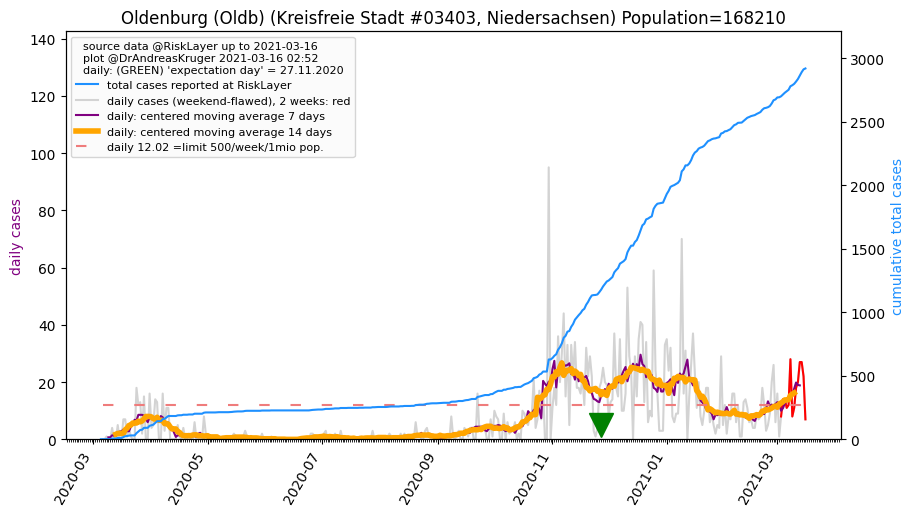
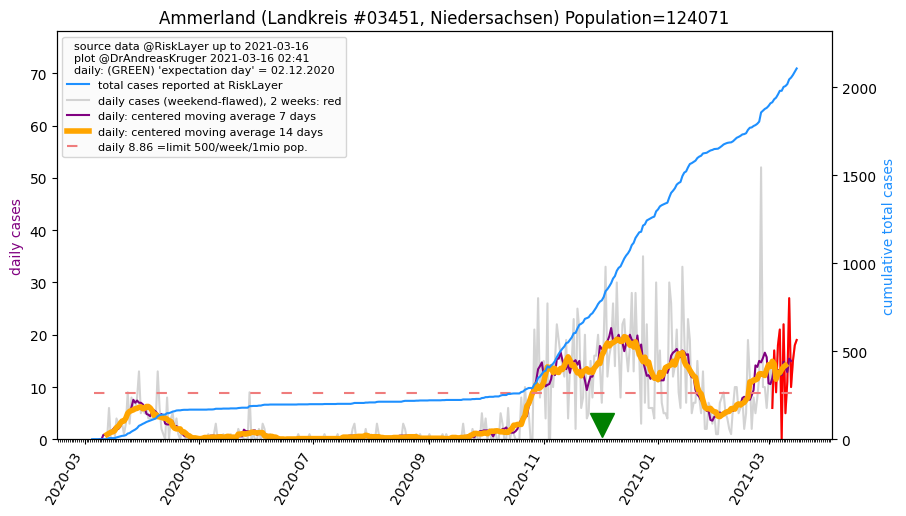
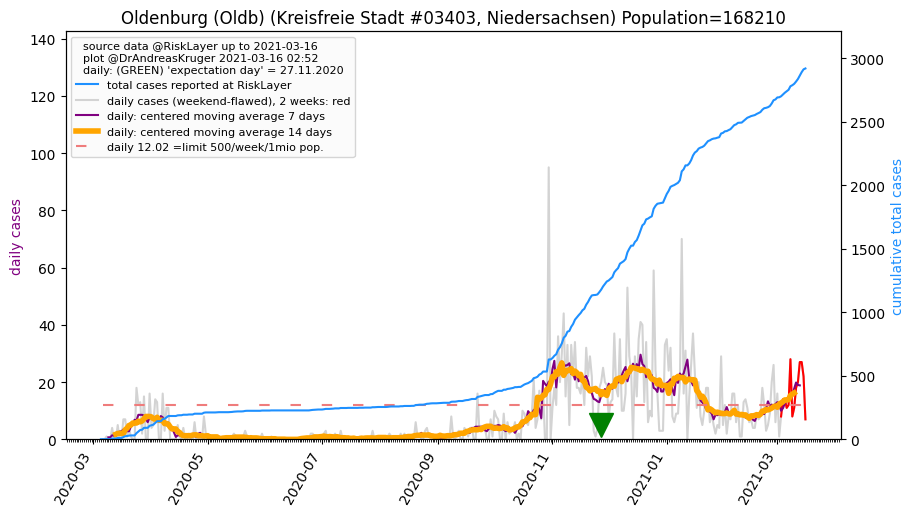
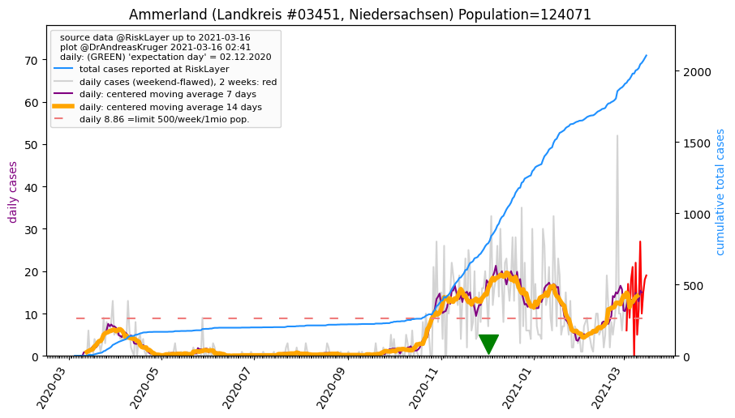

")
")
")
")

")
")
")

_LK (49.6 km)")
| Delmenhorst_KS (0.0 km) |
Bremen_KS (11.9 km) |
Oldenburg_LK (18.5 km) |
| Osterholz_LK (24.9 km) |
Oldenburg (Oldb)_KS (30.1 km)  |
Diepholz_LK (35.9 km) |
| Verden_LK (36.6 km) |
Wesermarsch_LK (38.4 km) |
Ammerland_LK (46.3 km)  |
| Rotenburg (Wümme)_LK (49.6 km) |
All plots are regenerated with new data every night. Beware this temporary hotspot is an experimental page - it might get removed, so please do not link to it. Instead link to project http://tiny.cc/cov19de.